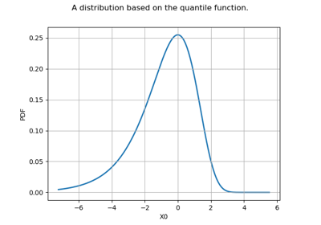

SymbolicFunction¶
- class SymbolicFunction(*args)¶
Symbolic function.
- Parameters:
- inputssequence of str, or str
List of input variables names of the function.
- formulassequence of str, or str
List of analytical formulas between the inputs and the outputs. The function is defined by outputs = formulas(inputs).
- Available functions:
sin
cos
tan
asin
acos
atan
sinh
cosh
tanh
asinh
acosh
atanh
log2
log10
log
ln
lngamma
gamma
exp
erf
erfc
sqrt
cbrt
besselJ0
besselJ1
besselY0
besselY1
sign
rint
abs
min
max
sum
avg
floor
ceil
trunc
round
- Available operators:
<= (less or equal)
>= (greater or equal)
!= (not equal)
== (equal)
> (greater than)
< (less than)
+ (addition)
- (subtraction)
* (multiplication)
/ (division)
^ (raise x to the power of y)
- Available constants:
e_ (Euler’s constant)
pi_ (Pi)
Notes
Up to version 1.10, OpenTURNS relied on muParser to parse analytical formulas. Since version 1.11, ExprTk is used by default, but both parsers can be used if their support have been compiled. This is controlled by the SymbolicParser-Backend
ResourceMapentry.Examples
>>> import openturns as ot >>> f = ot.SymbolicFunction(['x0', 'x1'], ['x0 + x1', 'x0 - x1']) >>> print(f([1, 2])) [3,-1]
ExprTk allows one to write multiple outputs; in this case, the constructor has a special syntax, it contains input variables names, but also output variables names, and formula is a string:
>>> import openturns as ot >>> f = ot.SymbolicFunction(['x0', 'x1'], ['y0', 'y1'], 'y0 := x0 + x1; y1 := x0 - x1') >>> print(f([1, 2])) [3,-1]
The following example uses the min and sqrt functions:
>>> formula = 'min(-x1 - x2 - x3 + 3 * sqrt(3), -x3 + 3)' >>> limitStateFunction = ot.SymbolicFunction(['x1', 'x2', 'x3'], [formula]) >>> print(limitStateFunction([1, 2, 3])) [-0.803848]
The following example splits the formula into four parts to manage its length:
>>> formula = '15.59 * 1e4 - x1 *x2^3 / (2 * x3^3) *' >>> formula += '((x4^2 - 4 * x5 * x6 * x7^2 + ' >>> formula += 'x4 * (x6 + 4 * x5 + 2 *x6 * x7)) / ' >>> formula += '(x4 * x5 * (x4 + x6 + 2 *x6 *x7)))' >>> input_variables = ['x1', 'x2', 'x3', 'x4', 'x5', 'x6', 'x7'] >>> limitStateFunction = ot.SymbolicFunction(input_variables, [formula]) >>> print(limitStateFunction([1, 2, 3, 4, 5, 6, 7])) [155900]
ExprTk allows one to manage intermediate variables with the var keyword. This is convenient in the situation where several outputs require the same intermediate calculation or if the output is a complex function of the input. In the following example, we compute the alpha variable which is the slope of the river in the flooding example. This slope is then used in the computation of the height H.
>>> import openturns as ot >>> inputs = ['Q', 'Ks', 'Zv', 'Zm', 'Hd', 'Zb', 'L', 'B'] >>> outputs = ['H', 'S'] >>> formula = 'var alpha := (Zm - Zv)/L; H := (Q/(Ks*B*sqrt(alpha)))^(3.0/5.0);' >>> formula += 'var Zc := H + Zv; var Zd := Zb + Hd; S := Zc - Zd' >>> myFunction = ot.SymbolicFunction(inputs, outputs, formula) >>> X = [1013.0, 30.0, 50.0, 55.0, 8, 55.5, 5000.0, 300.0] >>> print(myFunction(X)) [2.142,-11.358]
The following example illustrates a function for a system of two components.
>>> equations = ['var g1 := x1^2 -8 * x2 + 16'] >>> equations.append('var g2 := -16 * x1 + x2 + 32') >>> equations.append('gsys := max(g1, g2)') >>> formula = ';'.join(equations) >>> limitStateFunction = ot.SymbolicFunction(['x1', 'x2'], ['gsys'], formula) >>> print(limitStateFunction([1, 2])) [18]
See the ExprTk documentation for details.
Methods
Return the list of valid constants.
Return the list of valid functions.
Return the list of valid operators.
Return the list of built-in parsers.
__call__(*args)Call self as a function.
draw(*args)Draw the output of function as a
Graph.Accessor to the number of times the function has been called.
Accessor to the object's name.
Accessor to the description of the inputs and outputs.
Accessor to the evaluation function.
Accessor to the number of times the function has been called.
Formulas accessor.
Accessor to the gradient function.
Accessor to the number of times the gradient of the function has been called.
Accessor to the hessian function.
Accessor to the number of times the hessian of the function has been called.
getId()Accessor to the object's id.
Accessor to the underlying implementation.
Accessor to the description of the input vector.
Accessor to the dimension of the input vector.
getMarginal(*args)Accessor to marginal.
getName()Accessor to the object's name.
Accessor to the description of the output vector.
Accessor to the number of the outputs.
Accessor to the parameter values.
Accessor to the parameter description.
Accessor to the dimension of the parameter.
gradient(inP)Return the Jacobian transposed matrix of the function at a point.
hessian(inP)Return the hessian of the function at a point.
isLinear()Accessor to the linearity of the function.
isLinearlyDependent(index)Accessor to the linearity of the function with regard to a specific variable.
parameterGradient(inP)Accessor to the gradient against the parameter.
setDescription(description)Accessor to the description of the inputs and outputs.
setEvaluation(evaluation)Accessor to the evaluation function.
setGradient(gradient)Accessor to the gradient function.
setHessian(hessian)Accessor to the hessian function.
setInputDescription(inputDescription)Accessor to the description of the input vector.
setName(name)Accessor to the object's name.
setOutputDescription(inputDescription)Accessor to the description of the output vector.
setParameter(parameter)Accessor to the parameter values.
setParameterDescription(description)Accessor to the parameter description.
- __init__(*args)¶
- static GetValidConstants()¶
Return the list of valid constants.
- Returns:
- list_constants
Description List of the available constants.
- list_constants
Examples
>>> import openturns as ot >>> print(ot.SymbolicFunction.GetValidConstants()[0]) e_ -> Euler's constant (2.71828...)
- static GetValidFunctions()¶
Return the list of valid functions.
- Returns:
- list_functions
Description List of the available functions.
- list_functions
Examples
>>> import openturns as ot >>> print(ot.SymbolicFunction.GetValidFunctions()[0]) sin(arg) -> sine function
- static GetValidOperators()¶
Return the list of valid operators.
- Returns:
- list_operators
Description List of the available operators.
- list_operators
Examples
>>> import openturns as ot >>> print(ot.SymbolicFunction.GetValidOperators()[0]) = -> assignment, can only be applied to variable names (priority -1)
- static GetValidParsers()¶
Return the list of built-in parsers.
Analytical formulas can be parsed by ‘MuParser’ or ‘ExprTk’ parsers, but this support may be disabled at build-time. This method returns the list of parsers available at run-time. Parser can be switched by changing ‘SymbolicParser-Backend’ ResourceMap entry.
- Returns:
- list_constants
Description List of the available parsers.
- list_constants
- draw(*args)¶
Draw the output of function as a
Graph.- Available usages:
draw(inputMarg, outputMarg, CP, xiMin, xiMax, ptNb)
draw(firstInputMarg, secondInputMarg, outputMarg, CP, xiMin_xjMin, xiMax_xjMax, ptNbs)
draw(xiMin, xiMax, ptNb)
draw(xiMin_xjMin, xiMax_xjMax, ptNbs)
- Parameters:
- outputMarg, inputMargint,

outputMarg is the index of the marginal to draw as a function of the marginal with index inputMarg.
- firstInputMarg, secondInputMargint,

In the 2D case, the marginal outputMarg is drawn as a function of the two marginals with indexes firstInputMarg and secondInputMarg.
- CPsequence of float
Central point.
- xiMin, xiMaxfloat
Define the interval where the curve is plotted.
- xiMin_xjMin, xiMax_xjMaxsequence of float of dimension 2.
In the 2D case, define the intervals where the curves are plotted.
- ptNbint
 or list of ints of dimension 2
or list of ints of dimension 2 
The number of points to draw the curves.
- outputMarg, inputMargint,
Notes
We note
 where
where  and
and
 ,
with
,
with  and
and  .
.In the first usage:
Draws graph of the given 1D outputMarg marginal
 as a function of the given 1D inputMarg
marginal with respect to the variation of
as a function of the given 1D inputMarg
marginal with respect to the variation of  in the interval
in the interval
![[x_i^{min}, x_i^{max}]](../../_images/math/89bef77d2f2b3cc33402ec8df300201af8a6b706.svg) , when all the other components of
, when all the other components of
 are fixed to the corresponding ones of the central point CP.
Then OpenTURNS draws the graph:
are fixed to the corresponding ones of the central point CP.
Then OpenTURNS draws the graph:
![t\in [x_i^{min}, x_i^{max}] \mapsto f_k(CP_1, \dots, CP_{i-1}, t, CP_{i+1} \dots, CP_n)](../../_images/math/c60d32c52221a91feb2617bcdc2152dd8a942212.svg) .
.In the second usage:
Draws the iso-curves of the given outputMarg marginal
 as a
function of the given 2D firstInputMarg and secondInputMarg marginals
with respect to the variation of
as a
function of the given 2D firstInputMarg and secondInputMarg marginals
with respect to the variation of  in the interval
in the interval
![[x_i^{min}, x_i^{max}] \times [x_j^{min}, x_j^{max}]](../../_images/math/f745ac6b363f937777c69e6194f8b8f2c846e142.svg) , when all the
other components of are fixed to the corresponding ones of the
central point CP. Then OpenTURNS draws the graph:
, when all the
other components of are fixed to the corresponding ones of the
central point CP. Then OpenTURNS draws the graph:
![(t,u) \in [x_i^{min}, x_i^{max}] \times [x_j^{min}, x_j^{max}] \mapsto f_k(CP_1, \dots, CP_{i-1}, t, CP_{i+1}, \dots, CP_{j-1}, u, CP_{j+1} \dots, CP_n)](../../_images/math/915859db4c00583ab1668cd77606b4ae016da223.svg) .
.In the third usage:
The same as the first usage but only for function
 .
.In the fourth usage:
The same as the second usage but only for function
 .
.Examples
>>> import openturns as ot >>> from openturns.viewer import View >>> f = ot.SymbolicFunction('x', 'sin(2*pi_*x)*exp(-x^2/2)') >>> graph = f.draw(-1.2, 1.2, 100) >>> View(graph).show()
- getCallsNumber()¶
Accessor to the number of times the function has been called.
- Returns:
- calls_numberint
Integer that counts the number of times the function has been called since its creation.
- getClassName()¶
Accessor to the object’s name.
- Returns:
- class_namestr
The object class name (object.__class__.__name__).
- getDescription()¶
Accessor to the description of the inputs and outputs.
- Returns:
- description
Description Description of the inputs and the outputs.
- description
Examples
>>> import openturns as ot >>> f = ot.SymbolicFunction(['x1', 'x2'], ... ['2 * x1^2 + x1 + 8 * x2 + 4 * cos(x1) * x2 + 6']) >>> print(f.getDescription()) [x1,x2,y0]
- getEvaluation()¶
Accessor to the evaluation function.
- Returns:
- function
EvaluationImplementation The evaluation function.
- function
Examples
>>> import openturns as ot >>> f = ot.SymbolicFunction(['x1', 'x2'], ... ['2 * x1^2 + x1 + 8 * x2 + 4 * cos(x1) * x2 + 6']) >>> print(f.getEvaluation()) [x1,x2]->[2 * x1^2 + x1 + 8 * x2 + 4 * cos(x1) * x2 + 6]
- getEvaluationCallsNumber()¶
Accessor to the number of times the function has been called.
- Returns:
- evaluation_calls_numberint
Integer that counts the number of times the function has been called since its creation.
- getFormulas()¶
Formulas accessor.
- Returns:
- list_functions
Description List of the formulas.
- list_functions
- getGradient()¶
Accessor to the gradient function.
- Returns:
- gradient
GradientImplementation The gradient function.
- gradient
- getGradientCallsNumber()¶
Accessor to the number of times the gradient of the function has been called.
- Returns:
- gradient_calls_numberint
Integer that counts the number of times the gradient of the Function has been called since its creation. Note that if the gradient is implemented by a finite difference method, the gradient calls number is equal to 0 and the different calls are counted in the evaluation calls number.
- getHessian()¶
Accessor to the hessian function.
- Returns:
- hessian
HessianImplementation The hessian function.
- hessian
- getHessianCallsNumber()¶
Accessor to the number of times the hessian of the function has been called.
- Returns:
- hessian_calls_numberint
Integer that counts the number of times the hessian of the Function has been called since its creation. Note that if the hessian is implemented by a finite difference method, the hessian calls number is equal to 0 and the different calls are counted in the evaluation calls number.
- getId()¶
Accessor to the object’s id.
- Returns:
- idint
Internal unique identifier.
- getImplementation()¶
Accessor to the underlying implementation.
- Returns:
- implImplementation
A copy of the underlying implementation object.
- getInputDescription()¶
Accessor to the description of the input vector.
- Returns:
- description
Description Description of the input vector.
- description
Examples
>>> import openturns as ot >>> f = ot.SymbolicFunction(['x1', 'x2'], ... ['2 * x1^2 + x1 + 8 * x2 + 4 * cos(x1) * x2 + 6']) >>> print(f.getInputDescription()) [x1,x2]
- getInputDimension()¶
Accessor to the dimension of the input vector.
- Returns:
- inputDimint
Dimension of the input vector
 .
.
Examples
>>> import openturns as ot >>> f = ot.SymbolicFunction(['x1', 'x2'], ... ['2 * x1^2 + x1 + 8 * x2 + 4 * cos(x1) * x2 + 6']) >>> print(f.getInputDimension()) 2
- getMarginal(*args)¶
Accessor to marginal.
- Parameters:
- indicesint or list of ints
Set of indices for which the marginal is extracted.
- Returns:
- marginal
Function Function corresponding to either
 or
or
 , with
, with  and
and  .
.
- marginal
- getName()¶
Accessor to the object’s name.
- Returns:
- namestr
The name of the object.
- getOutputDescription()¶
Accessor to the description of the output vector.
- Returns:
- description
Description Description of the output vector.
- description
Examples
>>> import openturns as ot >>> f = ot.SymbolicFunction(['x1', 'x2'], ... ['2 * x1^2 + x1 + 8 * x2 + 4 * cos(x1) * x2 + 6']) >>> print(f.getOutputDescription()) [y0]
- getOutputDimension()¶
Accessor to the number of the outputs.
- Returns:
- number_outputsint
Dimension of the output vector
 .
.
Examples
>>> import openturns as ot >>> f = ot.SymbolicFunction(['x1', 'x2'], ... ['2 * x1^2 + x1 + 8 * x2 + 4 * cos(x1) * x2 + 6']) >>> print(f.getOutputDimension()) 1
- getParameterDescription()¶
Accessor to the parameter description.
- Returns:
- parameter
Description The parameter description.
- parameter
- getParameterDimension()¶
Accessor to the dimension of the parameter.
- Returns:
- parameterDimensionint
Dimension of the parameter.
- gradient(inP)¶
Return the Jacobian transposed matrix of the function at a point.
- Parameters:
- pointsequence of float
Point where the Jacobian transposed matrix is calculated.
- Returns:
- gradient
Matrix The Jacobian transposed matrix of the function at point.
- gradient
Examples
>>> import openturns as ot >>> f = ot.SymbolicFunction(['x1', 'x2'], ... ['2 * x1^2 + x1 + 8 * x2 + 4 * cos(x1) * x2 + 6','x1 + x2']) >>> print(f.gradient([3.14, 4])) [[ 13.5345 1 ] [ 4.00001 1 ]]
- hessian(inP)¶
Return the hessian of the function at a point.
- Parameters:
- pointsequence of float
Point where the hessian of the function is calculated.
- Returns:
- hessian
SymmetricTensor Hessian of the function at point.
- hessian
Examples
>>> import openturns as ot >>> f = ot.SymbolicFunction(['x1', 'x2'], ... ['2 * x1^2 + x1 + 8 * x2 + 4 * cos(x1) * x2 + 6','x1 + x2']) >>> print(f.hessian([3.14, 4])) sheet #0 [[ 20 -0.00637061 ] [ -0.00637061 0 ]] sheet #1 [[ 0 0 ] [ 0 0 ]]
- isLinear()¶
Accessor to the linearity of the function.
- Returns:
- linearbool
True if the function is linear, False otherwise.
- isLinearlyDependent(index)¶
Accessor to the linearity of the function with regard to a specific variable.
- Parameters:
- indexint
The index of the variable with regard to which linearity is evaluated.
- Returns:
- linearbool
True if the function is linearly dependent on the specified variable, False otherwise.
- parameterGradient(inP)¶
Accessor to the gradient against the parameter.
- Returns:
- gradient
Matrix The gradient.
- gradient
- setDescription(description)¶
Accessor to the description of the inputs and outputs.
- Parameters:
- descriptionsequence of str
Description of the inputs and the outputs.
Examples
>>> import openturns as ot >>> f = ot.SymbolicFunction(['x1', 'x2'], ... ['2 * x1^2 + x1 + 8 * x2 + 4 * cos(x1) * x2 + 6']) >>> print(f.getDescription()) [x1,x2,y0] >>> f.setDescription(['a','b','y']) >>> print(f.getDescription()) [a,b,y]
- setEvaluation(evaluation)¶
Accessor to the evaluation function.
- Parameters:
- function
EvaluationImplementation The evaluation function.
- function
- setGradient(gradient)¶
Accessor to the gradient function.
- Parameters:
- gradient_function
GradientImplementation The gradient function.
- gradient_function
Examples
>>> import openturns as ot >>> f = ot.SymbolicFunction(['x1', 'x2'], ... ['2 * x1^2 + x1 + 8 * x2 + 4 * cos(x1) * x2 + 6']) >>> f.setGradient(ot.CenteredFiniteDifferenceGradient( ... ot.ResourceMap.GetAsScalar('CenteredFiniteDifferenceGradient-DefaultEpsilon'), ... f.getEvaluation()))
- setHessian(hessian)¶
Accessor to the hessian function.
- Parameters:
- hessian_function
HessianImplementation The hessian function.
- hessian_function
Examples
>>> import openturns as ot >>> f = ot.SymbolicFunction(['x1', 'x2'], ... ['2 * x1^2 + x1 + 8 * x2 + 4 * cos(x1) * x2 + 6']) >>> f.setHessian(ot.CenteredFiniteDifferenceHessian( ... ot.ResourceMap.GetAsScalar('CenteredFiniteDifferenceHessian-DefaultEpsilon'), ... f.getEvaluation()))
- setInputDescription(inputDescription)¶
Accessor to the description of the input vector.
- Parameters:
- description
Description Description of the input vector.
- description
- setName(name)¶
Accessor to the object’s name.
- Parameters:
- namestr
The name of the object.
- setOutputDescription(inputDescription)¶
Accessor to the description of the output vector.
- Parameters:
- description
Description Description of the output vector.
- description
- setParameter(parameter)¶
Accessor to the parameter values.
- Parameters:
- parametersequence of float
The parameter values.
- setParameterDescription(description)¶
Accessor to the parameter description.
- Parameters:
- parameter
Description The parameter description.
- parameter
Examples using the class¶



Create your own distribution given its quantile function


Create a process from random vectors and processes


Create a polynomial chaos metamodel by integration on the cantilever beam


Estimate a probability with Latin Hypercube Sampling


Use the Adaptive Directional Stratification Algorithm

Use the post-analytical importance sampling algorithm


Estimate a probability with Monte-Carlo on axial stressed beam: a quick start guide to reliability


Use the FORM algorithm in case of several design points


Test the design point with the Strong Maximum Test


Axial stressed beam : comparing different methods to estimate a probability


An illustrated example of a FORM probability estimate

Estimate Sobol indices on a field to point function


Estimate Sobol’ indices for a function with multivariate output


Defining Python and symbolic functions: a quick start introduction to functions